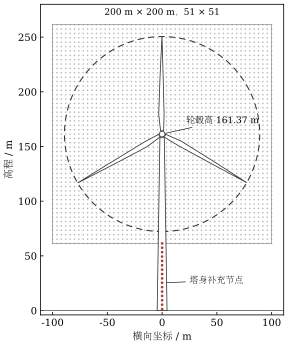
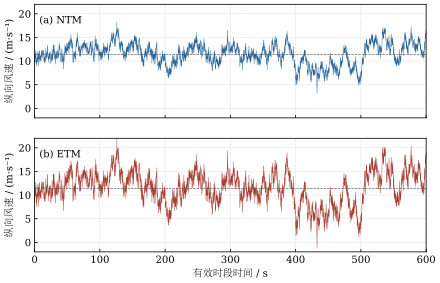
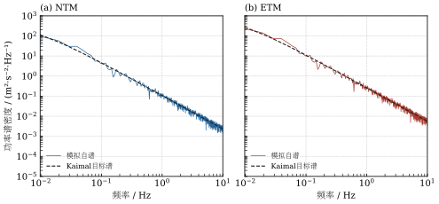

正文随机风场图 · V8-R12
11.4 m/s，NTM / 1ETM，同随机种子20261124，51×51，700 s，统计100–700 s。参照何泽瑜图2-1～2-3；新生成风场，不是历史36工况原件。

图3.2-1 随机风场离散示意图 · SVG · PDF · PNG
图3.2-2 轮毂中心纵向风速时程 · SVG · PDF · PNG
图3.2-3 轮毂中心风速自谱与Kaimal目标谱对比 · SVG · PDF · PNG数值来源与复现
审核记录 · NTM时程 · ETM时程 · NTM自谱 · ETM自谱 · 制图代码
纵向标准差相对目标偏差：NTM −3.88%，ETM −3.87%。单种子对照，仅为数值检查，不构成实测或多种子统计验收。